NCERT इतिहास (कक्षा 10) - अध्याय 3
भूमंडलीकृत विश्व का बनना (The Making of a Global World)
वैश्वीकरण (Globalization) एक ऐसी आर्थिक व सामाजिक प्रणाली है जो पिछले 50 वर्षों में हमारे सामने आई है। लेकिन जैसा कि हम इस अध्याय में देखेंगे, भूमंडलीकृत विश्व के बनने की एक बहुत लंबी ऐतिहासिक प्रक्रिया रही है। प्राचीन काल से ही यात्री, व्यापारी, संन्यासी और तीर्थयात्री ज्ञान, अवसरों, आध्यात्मिक शांति और सुरक्षा की खोज में दूर-दूर की यात्राओं पर जाते रहे हैं।
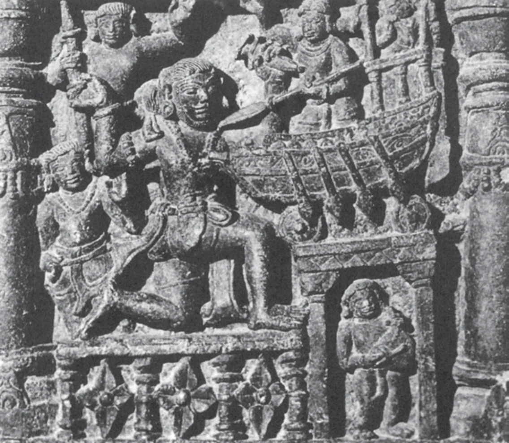
चित्र 3.1 (आधिकारिक NCERT इतिहास पाठ्यपुस्तक अध्याय 3): गोवा संग्रहालय में रखा 10वीं शताब्दी का स्मारक पत्थर, जिस पर प्राचीन समुद्री जहाजों और महासागरीय व्यापारिक उड़ानों का चित्र उत्कीर्ण है।
🔍 चित्र का विस्तृत विवरण & ऐतिहासिक संदर्भ:
• क्या दर्शाता है: गोवा संग्रहालय में रखा 10वीं शताब्दी का स्मारक पत्थर, जिस पर प्राचीन जहाजों और महासागरीय व्यापार के दृश्य उत्कीर्ण हैं।
• ऐतिहासिक महत्व: यह साबित करता है कि प्राचीन काल से ही भारत का समुद्री मार्ग से दूर-दराज के देशों के साथ गहरा व्यापारिक संबंध था।
प्राचीन काल में दूर-स्थित जमीनी और समुद्री मार्ग पश्चिमी एशिया, चीन, भारत और यूरोप को आपस में जोड़ते थे। इन्हें 'रेशम मार्ग' (Silk Routes) कहा जाता है क्योंकि चीन से रेशम (Silk) की खेप इसी रास्ते पश्चिमी देशों को भेजी जाती थी।
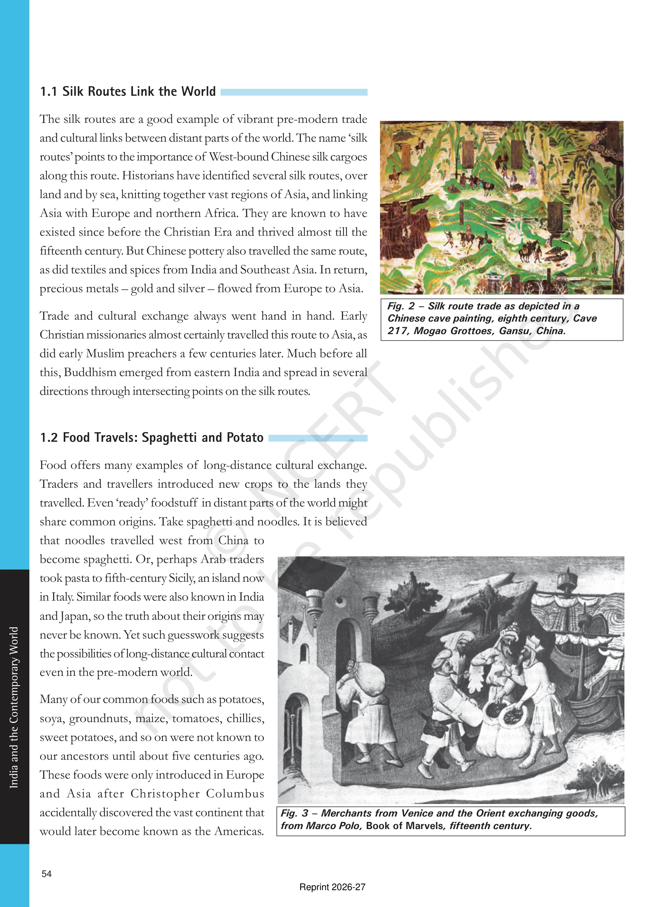
चित्र 3.2 (आधिकारिक NCERT इतिहास पाठ्यपुस्तक अध्याय 3): प्राचीन रेशम मार्ग (Silk Route) व्यापार का एक गुफा चित्रकारी निरूपण।
🔍 चित्र का विस्तृत विवरण & ऐतिहासिक संदर्भ:
• क्या दर्शाता है: प्राचीन रेशम मार्ग (Silk Routes) का एक गुफा चित्र, जिसमें व्यापारी ऊंटों और जहाजों से व्यापार करते दिखते हैं।
• ऐतिहासिक महत्व: ये मार्ग एशिया को यूरोप और उत्तरी अफ्रीका से जोड़ते थे। चीनी रेशम, मसाले और धर्म (बौद्ध, इस्लाम, ईसाई) इसी रास्ते पूरी दुनिया में फैले।
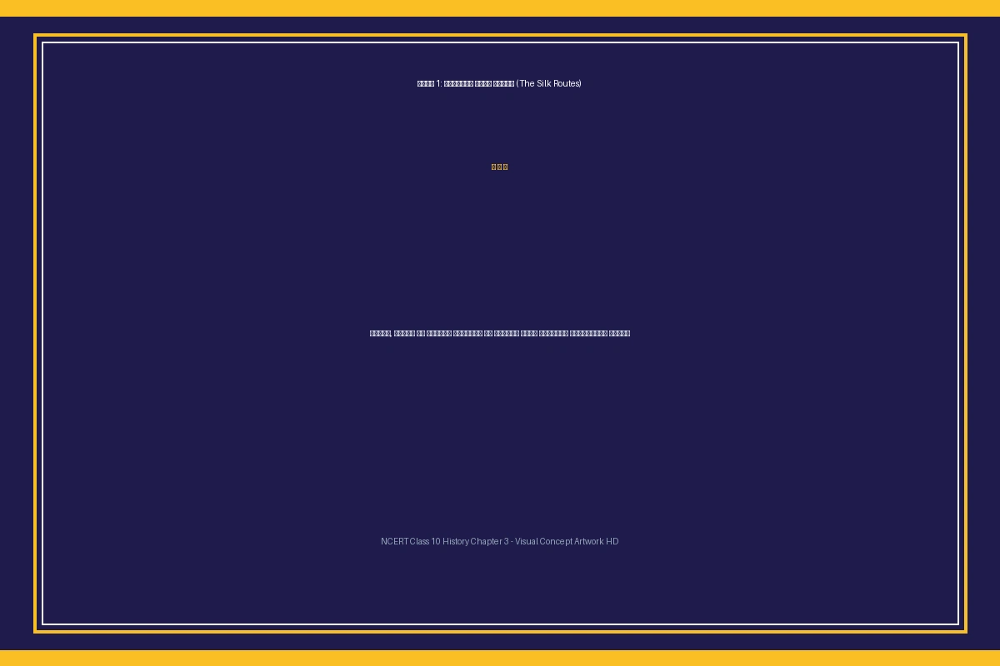
चित्र 1 (Topic AI HD Artwork): प्राचीन रेशम मार्ग (Silk Road) पर ऊंटों का कारवां - रेशम, चीनी बर्तन, भारतीय मसाले और सोने के वैश्विक आदान-प्रदान का प्रतीक।
🔍 चित्र का विस्तृत विवरण & ऐतिहासिक संदर्भ:
• क्या दर्शाता है: रेशम मार्ग पर ऊंटों का कारवां - रेशम, बर्तन, मसालों और सोने-चांदी के अंतरराष्ट्रीय विनिमय का दृश्य।
• ऐतिहासिक महत्व: यह ईसा पूर्व (BCE) से 15वीं सदी तक प्राचीन वैश्वीकरण का सबसे महत्वपूर्ण नेटवर्क रहा।
🌐 रेशम मार्ग की 4 प्रमुख विशेषताएं (Features of Silk Routes):
1. विशाल नेटवर्क: ये मार्ग ईसा पूर्व (BCE) से शुरू होकर 15वीं शताब्दी तक अस्तित्व में रहे। ये एशिया के विशाल क्षेत्रों को एक-दूसरे से और यूरोप व उत्तरी अफ्रीका से जोड़ते थे।
2. वस्तुओं का व्यापार: चीनी रेशम (Silk), चीनी मिट्टी के बर्तन (Porcelain), भारत व दक्षिण-पूर्व एशिया के कपड़े व मसाले पश्चिम की ओर जाते थे। बदले में सोने-चांदी जैसी कीमती धातुएं (Precious Metals) यूरोप से एशिया आती थीं।
3. सांस्कृतिक आदान-प्रदान: केवल व्यापार ही नहीं, बल्कि बौद्ध धर्म (Buddhism), ईसाई धर्म (Christianity) और इस्लाम (Islam) भी इसी रास्ते दुनिया के कोने-कोने में फैले।
4. भोजन का प्रसार: यात्री अपने साथ नए खाद्य पदार्थों के बीज लाते थे जो नए महाद्वीपों में बोए जाते थे।
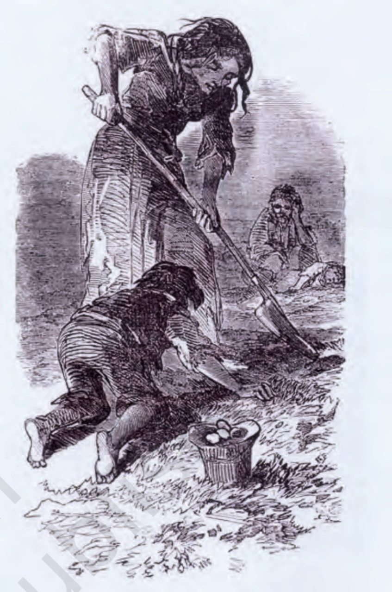
चित्र 3.3 (आधिकारिक NCERT इतिहास पाठ्यपुस्तक अध्याय 3): 1845 के आयरलैंड के भयानक आलू अकाल (Irish Potato Famine) में भुखमरी के शिकार बेघर परिवार का मर्मस्पर्शी चित्र।
🔍 चित्र का विस्तृत विवरण & ऐतिहासिक संदर्भ:
• क्या दर्शाता है: 1845 के **आयरलैंड के भयानक आलू अकाल (Irish Potato Famine)** में भुखमरी के शिकार बेघर और लाचार परिवारों का मर्मस्पर्शी चित्र।
• ऐतिहासिक महत्व: 1840 के दशक में आलू की फसल फफूंद से नष्ट हो गई। आयरलैंड के 10 लाख लोग भुखमरी से मर गए और लाखों को देश छोड़ना पड़ा।
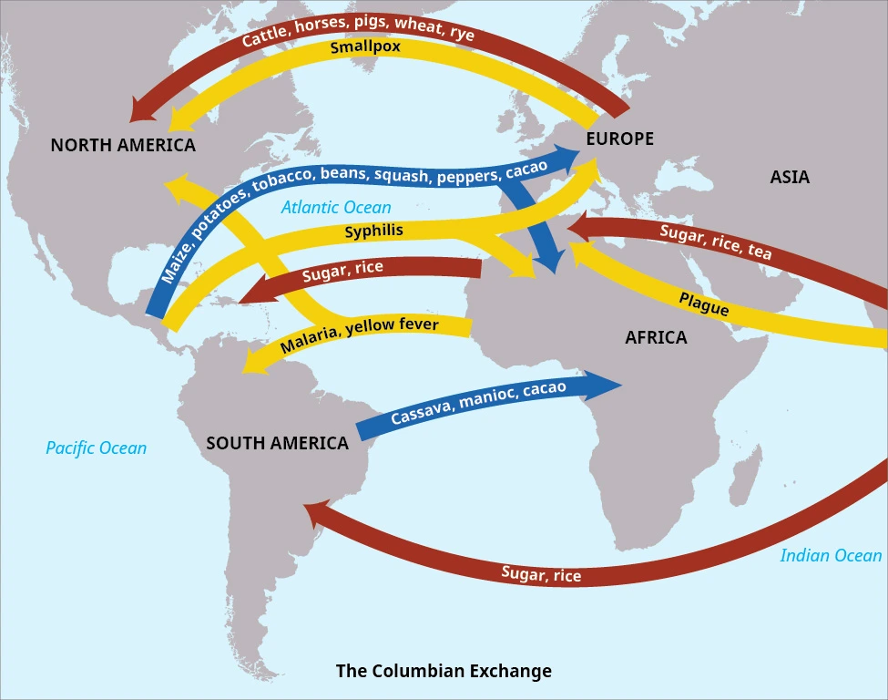
चित्र 2 (Topic AI HD Artwork): भोजन की वैश्विक यात्रा - नूडल्स से स्पैगेटी का बनना और अमेरिका की खोज के बाद आलू, मक्का व मिर्च का वैश्विक खाद्य क्रांति में योगदान।
🔍 चित्र का विस्तृत विवरण & ऐतिहासिक संदर्भ:
• क्या दर्शाता है: भोजन की वैश्विक यात्रा - चीन से नूडल्स का पश्चिम जाकर स्पैगेटी बनना और 1492 में कोलंबस द्वारा अमेरिका की खोज से आलू, मक्का व मिर्च का प्रसार।
• ऐतिहासिक महत्व: इसने यूरोप के गरीबों की जिंदगी बदल दी और उनका औसतन जीवन स्तर बेहतर किया।
- नूडल्स से स्पैगेटी: माना जाता है कि नूडल्स चीन से पश्चिम गए और वहाँ उनसे 'स्पैगेटी' (Spaghetti) का विकास हुआ। इसी तरह अरब यात्रियों के साथ 5वीं सदी में 'पास्ता' (Pasta) इटली के सिसिली द्वीप पहुँचा।
- क्रिस्टोफर कोलंबस और नए खाद्य पदार्थ: 1492 में जब क्रिस्टोफर कोलंबस ने गलती से अमेरिकी महाद्वीप खोजा, तब हमारे पास **आलू (Potato), मक्का (Maize), टमाटर (Tomato), मिर्च (Chilli), शकरकंद और मूंगफली** आए। इससे पहले हमारे पूर्वज इन खाद्य पदार्थों को नहीं जानते थे।
- आयरलैंड का आलू अकाल (Irish Potato Famine 1845-1849): साधारण आलू ने यूरोप के गरीबों की जिंदगी बदल दी। उनका भोजन बेहतर हुआ और औसत उम्र बढ़ गई। आयरलैंड के गरीब किसान आलू पर इतने निर्भर हो गए थे कि जब 1840 के दशक के मध्य में फफूंद (Fungus) की बीमारी से आलू की फसल नष्ट हो गई, तो लगभग **10 लाख लोग भुखमरी से मारे गए** और लाखों लोगों को काम की तलाश में घर छोड़ना पड़ा।
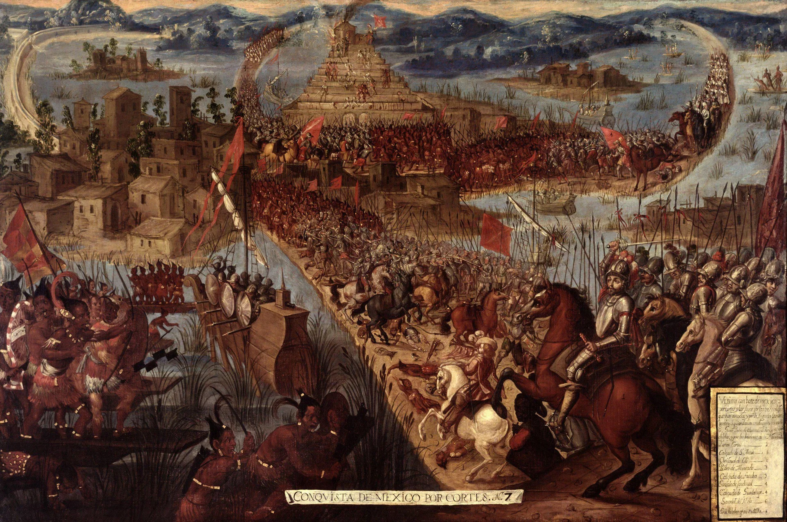
चित्र 3 (Topic AI HD Artwork): 16वीं सदी में स्पैनिश विजेताओं द्वारा अमेरिका पर विजय - जैविक हथियार के रूप में चेचक (Smallpox) महामारी का विनाशकारी प्रसार।
🔍 चित्र का विस्तृत विवरण & ऐतिहासिक संदर्भ:
• क्या दर्शाता है: 16वीं सदी में स्पैनिश और पोर्तुगीज विजेताओं द्वारा अमेरिका पर कब्जा और **चेचक (Smallpox)** महामारी का तबाही भरा प्रसार।
• ऐतिहासिक महत्व: स्पैनिश विजेताओं का सबसे बड़ा जैविक हथियार चेचक के कीटाणु थे, क्योंकि अमरीकी मूल निवासियों में इम्युनिटी न होने से पूरे समुदाय खत्म हो गए।
⚠️ जैविक हथियार के रूप में चेचक (Smallpox as a Biological Weapon):
• 16वीं सदी के मध्य में पोर्तुगीज और स्पैनिश सेनाओं ने अमेरिका की विजय शुरू की। उनकी सबसे बड़ी ताकत उनकी सैन्य बंदूकें नहीं थीं, बल्कि **'चेचक' (Smallpox) जैसे कीटाणु** थे जो वे अपने साथ ले गए थे।
• अमरीका के मूल निवासी लाखों सालों से बाहरी दुनिया से कटे हुए थे। उनके शरीर में इन बीमारियों से लड़ने की **प्रतिरोधक क्षमता (Immunity)** नहीं थी। चेचक ने पूरे के पूरे समुदायों को खत्म कर दिया और स्पेनिश विजेताओं की जीत का रास्ता आसान बना दिया।
19वीं सदी में आर्थिक, राजनीतिक, सामाजिक और तकनीकी कारकों ने जटिल तरीकों से एक-दूसरे के साथ अंतःक्रिया की और संपूर्ण विश्व अर्थव्यवस्था को नया रूप दिया।
📜 19वीं सदी में अंतरराष्ट्रीय आर्थिक विनिमय के 3 प्रवाह (Three Economic Flows):
1. व्यापार का प्रवाह (Flow of Trade): प्राथमिक रूप से प्राथमिक वस्तुओं (कच्चा माल जैसे गेहूं, कपास) और निर्मित वस्तुओं के व्यापार तक सीमित था।
2. श्रम का प्रवाह (Flow of Labour): काम या रोजगार की तलाश में लोगों का एक स्थान से दूसरे स्थान पर प्रवासन (उदा: भारत व चीन से मजदूरों का जाना)।
3. पूंजी का प्रवाह (Flow of Capital): दूर-दराज के क्षेत्रों में अल्पकालिक या दीर्घकालिक निवेश (Investment)।
📚 ब्रिटेन में 'कॉर्न लॉ' (Corn Laws) का रद्द होना:
• 18वीं सदी के अंत में ब्रिटेन में आबादी बढ़ने से खाद्यान्न की मांग बढ़ गई। सरकार ने बड़े जमींदारों के दबाव में मक्के (Corn) के आयात पर पाबंदी लगा दी। जिन कानूनों के तहत यह पाबंदी लगाई गई थी, उन्हें 'कॉर्न लॉ' (Corn Laws) कहा जाता था।
• खाद्य पदार्थों की ऊंची कीमतों से परेशान उद्योगपतियों और शहरियों ने सरकार को 'कॉर्न लॉ' समाप्त करने के लिए मजबूर किया।
• परिणाम: कॉर्न लॉ के हटने के बाद विदेश से सस्ता अनाज आयात होने लगा। ब्रिटिश किसान आयातित अनाज की कीमतों का मुकाबला नहीं कर सके और खेती बड़े पैमाने पर ठप हो गई। लाखों लोग बेरोजगार होकर शहरों या दूसरे देशों (अमेरिका, ऑस्ट्रेलिया) में चले गए।
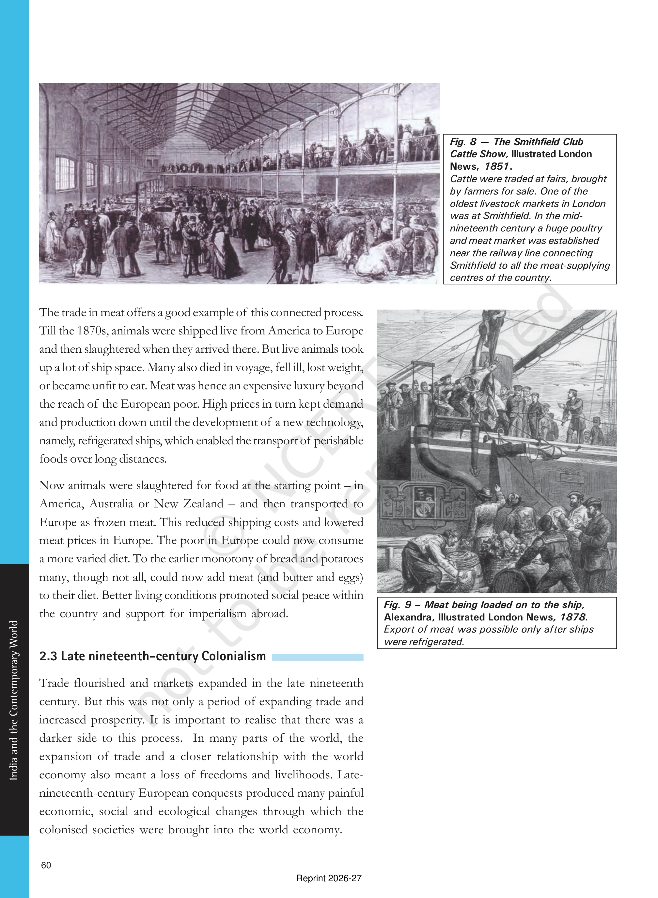
चित्र 3.4 (आधिकारिक NCERT इतिहास पाठ्यपुस्तक अध्याय 3): 19वीं सदी के अंत में प्रशीतित पोत (Refrigerated Ships) द्वारा अमेरिका और ऑस्ट्रेलिया से यूरोप में जमे हुए मांस (Frozen Meat) का प्रचुर आयात।
🔍 चित्र का विस्तृत विवरण & ऐतिहासिक संदर्भ:
• क्या दर्शाता है: प्रशीतित पोतों (Refrigerated Ships) द्वारा 1870 के दशक से अमेरिका और ऑस्ट्रेलिया से यूरोप में जमे हुए मांस (Frozen Meat) का प्रचुर आयात।
• ऐतिहासिक महत्व: पानी के जहाजों में रेफ्रिजरेशन तकनीक आने से अब जीवित जानवरों के स्थान पर जमे मांस का परिवहन आसान हुआ, जिससे यूरोप में मांस सस्ता हुआ और गरीबों का भोजन सुधरा।
चित्र 4 (Topic AI HD Artwork): प्रशीतित पोत (Refrigerated Ship) का आविष्कार - जीवित जानवरों के स्थान पर जमे हुए मांस के परिवहन से यूरोप में मांस सस्ता हुआ और सामाजिक शांति बढ़ी।
🔍 चित्र का विस्तृत विवरण & ऐतिहासिक संदर्भ:
• क्या दर्शाता है: प्रशीतित पोत (Refrigerated Ship) का आविष्कार और यूरोप के बाजारों में सस्ता मांस।
• ऐतिहासिक महत्व: प्रौद्योगिकी ने किस प्रकार अंतरराष्ट्रीय व्यापार और आम लोगों की जीवन शैली को बदला, यह इसका बेहतरीन उदाहरण है।
- रेलवे, भाप के जहाज (Steamships) और टेलीग्राफ जैसे तकनीकी बदलावों ने 19वीं सदी की विश्व अर्थव्यवस्था को गति दी।
- प्रशीतित पोत (Refrigerated Ships): 1870 के दशक तक अमेरिका से यूरोप को जीवित जानवर भेजे जाते थे जो जहाजों में बीमार होकर मर जाते थे या उनका वजन घट जाता था। इसलिए मांस एक महंगा सौदा था।
- पानी के जहाजों में रेफ्रिजरेशन तकनीक (Refrigeration Technology) लगने के बाद अब जानवरों को अमेरिका, ऑस्ट्रेलिया या न्यूजीलैंड में ही काटकर उनका मांस जमे हुए (Frozen) रूप में यूरोप भेजा जाने लगा। इससे मांस की कीमतें गिर गईं और यूरोप के गरीब लोग भी अपने भोजन में मांस, मक्खन व अंडे शामिल कर सके।
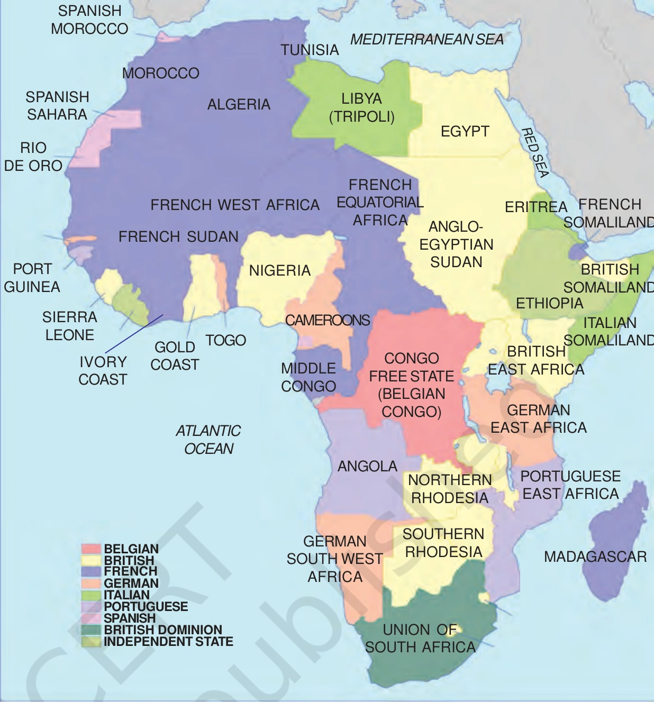
चित्र 3.5 (आधिकारिक NCERT इतिहास पाठ्यपुस्तक अध्याय 3): 1885 का बर्लिन सम्मेलन (Berlin Conference) - यूरोपीय ताकतों ने नक्शे पर सीधी लकीरें खींचकर अफ्रीका महाद्वीप का आपस में बंटवारा कर लिया।
🔍 चित्र का विस्तृत विवरण & ऐतिहासिक संदर्भ:
• क्या दर्शाता है: 1885 में बर्लिन सम्मेलन (Berlin Conference) का मानचित्र, जहाँ यूरोपीय शक्तियों ने नक्शे पर पेंसिल से सीधी रेखाएं खींचकर अफ्रीका का आपस में बंटवारा कर लिया।
• ऐतिहासिक महत्व: इसे 'कागजी बंटवारा' कहा जाता है, जिसने अफ्रीका को औपनिवेशिक गुलामी में धकेल दिया।
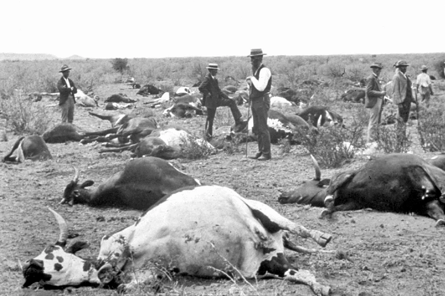
चित्र 5 (Topic AI HD Artwork): 1890 के दशक में अफ्रीका में फैला रिंडरपेस्ट (मवेशी प्लेग) - 90% मवेशियों की मौत से अफ्रीका के लोगों की आजीविका नष्ट हुई और यूरोपीय औपनिवेशीकरण आसान हुआ।
🔍 चित्र का विस्तृत विवरण & ऐतिहासिक संदर्भ:
• क्या दर्शाता है: 1890 के दशक में अफ्रीका में तबाही मचाने वाली मवेशियों की महामारी **रिंडरपेस्ट (Rinderpest / मवेशी प्लेग)**।
• ऐतिहासिक महत्व: इस बीमारी ने अफ्रीका के 90% मवेशियों को मार डाला। मवेशियों पर आजीविका चलाने वाले अफ्रीकी मजबूर होकर यूरोपीय बागानों और खानों में मजदूरी करने लगे।
🚨 रिंडरपेस्ट (Rinderpest) या मवेशी प्लेग का विनाश:
• अफ्रीका में सदियों से जमीन और मवेशियों (Cattle) की कोई कमी नहीं थी। लोग अपनी मवेशियों से ही आजीविका चलाते थे और मजदूरी करने की उन्हें जरूरत नहीं थी।
• 1880 के दशक के अंत में इरिथ्रिया में इतालवी सैनिकों के भोजन के लिए एशियाई मवेशी लाए गए। उनके साथ 'रिंडरपेस्ट' (Rinderpest) नामक खतरनाक मवेशी प्लेग अफ्रीका पहुँचा।
• रिंडरपेस्ट जंगल की आग की तरह फैला और अफ्रीका के 90% मवेशी मर गए। आजीविका के साधन नष्ट होने पर अफ्रीकी लोगों को विवश होकर यूरोपीय बागानों व खदानों में मजदूरी करनी पड़ी।
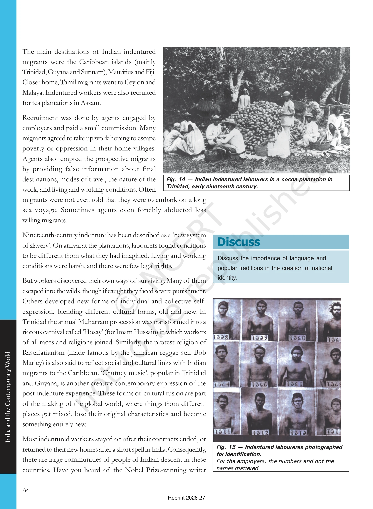
चित्र 3.6 (आधिकारिक NCERT इतिहास पाठ्यपुस्तक अध्याय 3): 19वीं सदी में त्रिनिदाद के कोको बागान (Cocoa Plantation) में कार्यरत भारतीय गिरमिटिया मजदूर (Indentured Labourers)।
🔍 चित्र का विस्तृत विवरण & ऐतिहासिक संदर्भ:
• क्या दर्शाता है: 19वीं सदी में त्रिनिदाद और गुयाना के गन्ना बागानों में काम करने वाले भारतीय **अनुबंधित श्रमिक (Indentured Labourers / गिरमिटिया मजदूर)**।
• ऐतिहासिक महत्व: भारत (यूपी, बिहार) से लाखों मजदूरों को बहला-फुसलाकर विदेशों में भेजा गया। इसे इतिहासकार 'नई दास प्रथा' (New System of Slavery) कहते हैं।
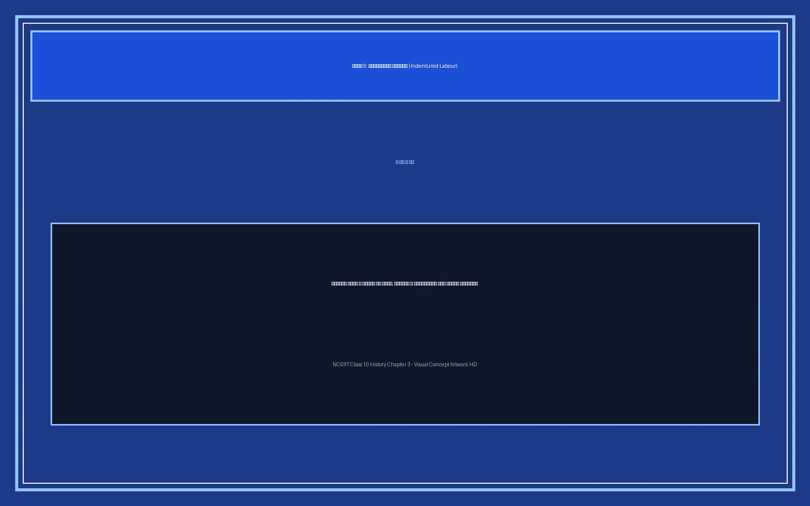
चित्र 6 (Topic AI HD Artwork): भारत (पूर्वी यूपी, बिहार, मध्य भारत) से फिजी व कैरेबियाई द्वीपों की ओर गिरमिटिया मजदूरों (Indentured Labourers) का दर्दनाक प्रवासन।
🔍 चित्र का विस्तृत विवरण & ऐतिहासिक संदर्भ:
• क्या दर्शाता है: गिरमिटिया मजदूरों का कठिन जीवन और उनकी नई संस्कृति (जैसे त्रिनिदाद का 'होसे' मेला और 'चटनी संगीत')।
• ऐतिहासिक महत्व: वी.एस. नायपॉल जैसे प्रसिद्ध लेखक इन्हीं गिरमिटिया मजदूरों के वंशज रहे हैं।
📜 'गिरमिटिया मजदूरी' (Indentured Labour) प्रणाली:
• परिभाषा: एक ऐसा अनुबंधित मजदूर (Bonded Labourer) जो एक निश्चित समय के लिए किसी नए देश में बागानों या खदानों में काम करने का समझौता करता है। भारत में इसे 'गिरमिट' (Agreement) कहा जाता था।
• प्रमुख क्षेत्र: पूर्वी उत्तर प्रदेश, बिहार, मध्य भारत और तमिलनाडु के सूखे इलाके।
• गंतव्य (Destinations): कैरेबियाई द्वीप (त्रिनिदाद, गुयाना, सूरीनाम), मॉरीशस, फिजी और असम के चाय बागान।
• नई दास प्रथा (New System of Slavery): एजेंट मजदूरों को झूठे सपने दिखाते थे और जहाज पर सवार कर देते थे। बागानों में काम की स्थितियां बेहद कठोर थीं।
• सांस्कृतिक सम्मिश्रण: मजदूरों ने अपनी नई संस्कृतियां बनाईं; जैसे त्रिनिदाद का मुहर्रम जुलूस 'होसे' (Hosay), चटनी संगीत (Chatney Music) और वी.एस. नायपॉल (V.S. Naipaul) जैसे नोबेल पुरस्कार विजेता लेखक इसी पृष्ठभूमि के हैं। 1921 में इस प्रथा को समाप्त कर दिया गया।
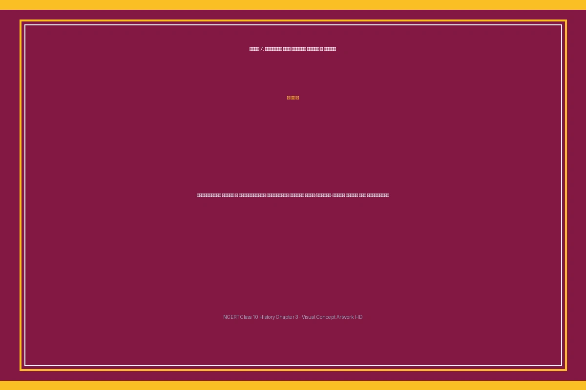
चित्र 7 (Topic AI HD Artwork): शिकारीपुरी श्रॉफ और नट्टूकोट्टै चेट्टियार - 19वीं सदी में मध्य व दक्षिण-पूर्व एशिया में अंतरराष्ट्रीय व्यापार का वित्तपोषण करने वाले साहसी भारतीय महाजन।
🔍 चित्र का विस्तृत विवरण & ऐतिहासिक संदर्भ:
• क्या दर्शाता है: शिकारीपुरी शराफ और नट्टूकोट्टै चेट्टियार जैसे भारतीय बैंकरों द्वारा मध्य और दक्षिण-पूर्व एशिया में व्यापारिक निवेश।
• ऐतिहासिक महत्व: भारतीय महाजनों ने यूरोपीय उपनिवेशवादियों से पहले ही विदेशों में अपना हंडी व बैंकिंग नेटवर्क बना लिया था।
- विश्व बाजार के लिए व्यावसायिक फसलें उगाने वाले किसानों को महाजनों और बैंकरों से कर्ज की जरूरत थी।
- शिकारीपुरी श्रॉफ और नट्टूकोट्टै चेट्टियार (Shikarpuri Shroffs & Nattukottai Chettiars): ये उन बैंकरों और व्यापारियों में से थे जो मध्य और दक्षिण-पूर्व एशिया में निर्यात खेती के लिए कर्ज देते थे। उनके पास अपनी एक परिष्कृत देशज वित्तीय प्रणाली (Indigenously Developed Financial System) थी।
- हाजी उस्मान सेठ और हैदराबादी सिंधी व्यापारी: 1860 के दशक से उन्होंने दुनिया भर के व्यस्त बंदरगाहों पर बड़े-बड़े एम्पोरियम (Emporia) खोले और औपनिवेशिक पर्यटकों को हस्तशिल्प का सामान बेचा।
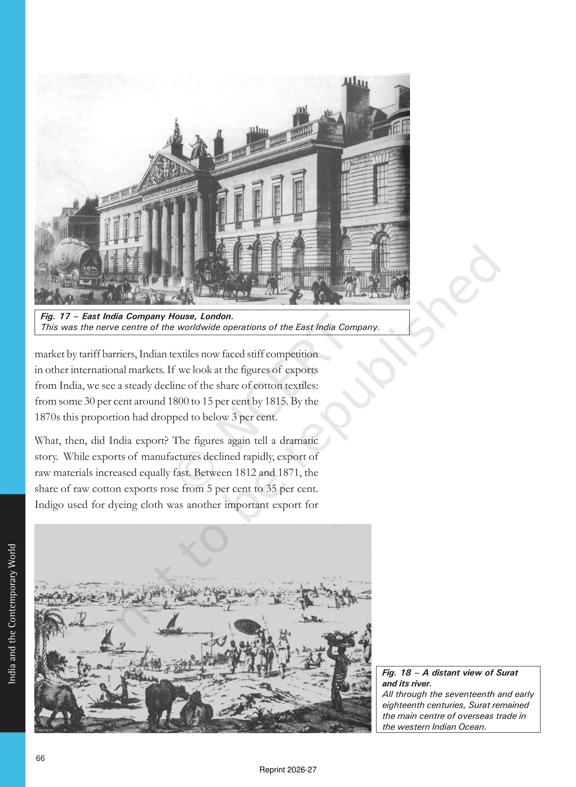
चित्र 3.7 (आधिकारिक NCERT इतिहास पाठ्यपुस्तक अध्याय 3): 17वीं-18वीं सदी का ऐतिहासिक सूरत बंदरगाह (Surat Port) तथा लंडन स्थित ईस्ट इंडिया कंपनी हाउस।
🔍 चित्र का विस्तृत विवरण & ऐतिहासिक संदर्भ:
• क्या दर्शाता है: 17वीं सदी का समृद्ध सूरत बंदरगाह जो भारत को खाड़ी और लाल सागर के देशों से जोड़ता था।
• ऐतिहासिक महत्व: यूरोपीय कंपनियों के एकाधिकार के कारण 18वीं सदी के मध्य में सूरत बंदरगाह का पतन हो गया और बंबई व कलकत्ता उभरे।
📚 'व्यापार अधिशेष' (Trade Surplus) और 'गृह प्रभार' (Home Charges):
• 19वीं सदी में ब्रिटेन से भारत आने वाले औद्योगिक सामान की कीमत भारत से ब्रिटेन जाने वाले कच्चे माल (कपास, नील) से बहुत ज्यादा होती थी। अतः ब्रिटेन का भारत के साथ हमेशा 'व्यापार अधिशेष' (Trade Surplus) रहता था।
• ब्रिटेन इस अधिशेष का उपयोग अन्य देशों (चीन, अमेरिका) के साथ अपने 'व्यापार घाटे' (Trade Deficit) को संतुलित करने में करता था।
• गृह प्रभार (Home Charges): ब्रिटेन भारत से कमाए गए लाभ से अपने अधिकारियों की पेंशन, ईस्ट इंडिया कंपनी के होम कर्जे और विदेशी अफसरों के वेतन का भुगतान करता था, जिसे 'गृह प्रभार' (Home Charges) कहा जाता था।
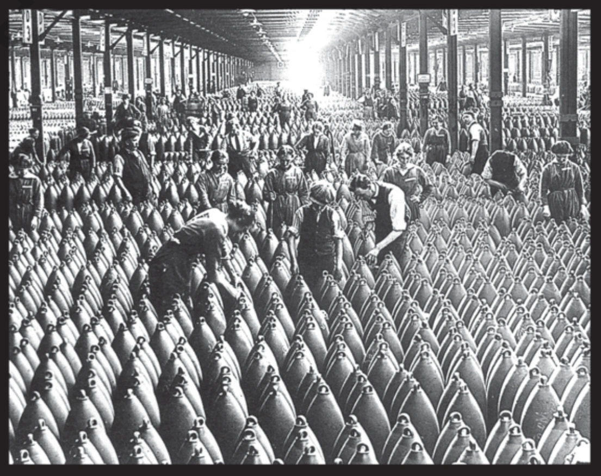
चित्र 3.8 (आधिकारिक NCERT इतिहास पाठ्यपुस्तक अध्याय 3): प्रथम विश्व युद्ध के दौरान ब्रिटिश हथियारों के कारखानों (Munition Factories) में बड़े पैमाने पर काम करती महिलाएं।
🔍 चित्र का विस्तृत विवरण & ऐतिहासिक संदर्भ:
• क्या दर्शाता है: प्रथम विश्व युद्ध (1914-1918) के दौरान ब्रिटेन के युद्ध सामग्री कारखाने में काम करती महिलाएं।
• ऐतिहासिक महत्व: पुरुषों के मोर्चे पर जाने के बाद महिलाओं ने कारखानों की कमान संभाली, जिसने सामाजिक व्यवस्था और महिला अधिकारों को नई दिशा दी।
- प्रथम विश्व युद्ध पहला आधुनिक औद्योगिक युद्ध था। इसमें टैंक, हवाई जहाज, मशीनगन और रासायनिक हथियारों का प्रयोग हुआ।
- करोड़ों युवाओं को सेना में भर्ती किया गया जिससे कामकाजी उम्र के पुरुषों की संख्या घट गई। महिलाओं ने कारखानों में बागडोर संभाली।
- कर्जदार से देनदार अमेरिका: अमेरिका जो युद्ध से पहले एक कर्जदार (Debtor) राष्ट्र था, युद्ध के बाद दुनिया का सबसे बड़ा कर्जदाता (Creditor) राष्ट्र बन गया।
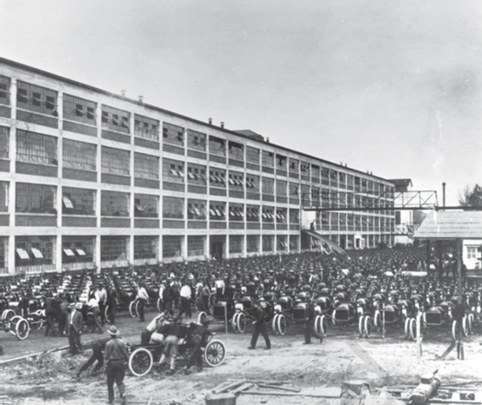
चित्र 3.9 (आधिकारिक NCERT इतिहास पाठ्यपुस्तक अध्याय 3): डेट्रॉयट (अमेरिका) में हेनरी फोर्ड की कार फैक्ट्री की ऐतिहासिक असेंबली लाइन (Assembly Line System)।
🔍 चित्र का विस्तृत विवरण & ऐतिहासिक संदर्भ:
• क्या दर्शाता है: हेनरी फोर्ड काDetroit कार कारखाना (1913) और **असेंबली लाइन (Assembly Line)** उत्पादन प्रणाली।
• ऐतिहासिक महत्व: असेंबली लाइन से कारों का उत्पादन बहुत तेज और सस्ता हुआ ('टी-मॉडल' कार), जिससे अमरीका में बड़े पैमाने पर उपभोग (Mass Consumption) का दौर आया।
🚗 हेनरी फोर्ड (Henry Ford) और बड़े पैमाने पर उत्पादन (Mass Production):
• कार निर्माता हेनरी फोर्ड ने शिकागो के बूचड़खाने की कन्वेयर बेल्ट (Conveyor Belt) देखकर 'असेंबली लाइन' (Assembly Line) प्रणाली अपनाई।
• इससे टी-मॉडल (T-Model) कारें बहुत तेजी से और सस्ती बनने लगीं। फोर्ड ने मजदूरों की मजदूरी बढ़ाकर $5 डॉलर प्रति दिन कर दी ताकि वे हड़ताल न करें। बड़े पैमाने पर उत्पादन से अमेरिका में कारें, फ्रिज, वाशिंग मशीन और रेडियो आम जनता की पहुंच में आ गए।
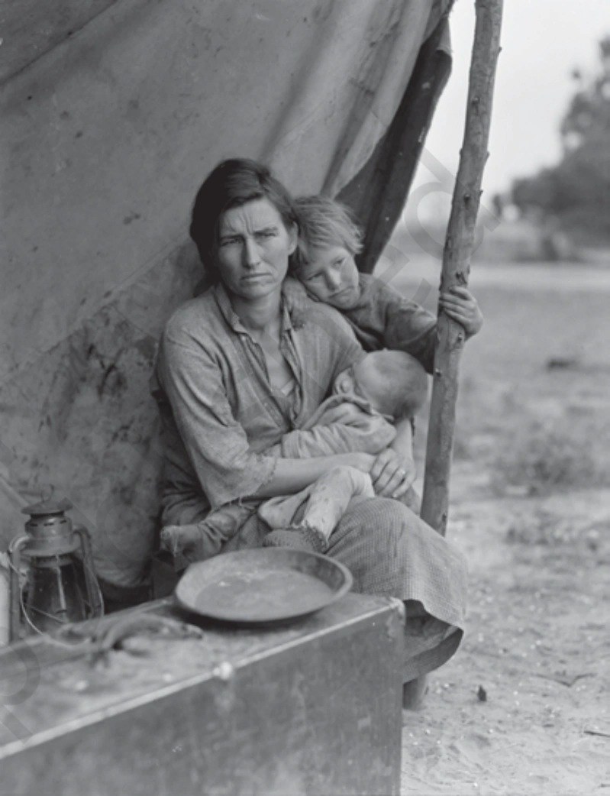
चित्र 3.10 (आधिकारिक NCERT इतिहास पाठ्यपुस्तक अध्याय 3): 1936 डोरोथिया लैंग की प्रसिद्ध तस्वीर 'प्रवासी माँ' (Migrant Mother) - 1929 की महामंदी में उजड़े किसान परिवार का मार्मिक चित्रण।
🔍 चित्र का विस्तृत विवरण & ऐतिहासिक संदर्भ:
• क्या दर्शाता है: 1929 की **महामंदी (The Great Depression)** में अमेरिका का धराशायी होता शेयर बाजार (Wall Street Exchange) और बेरोजगारों की भीड़।
• ऐतिहासिक महत्व: कृषि में अति-उत्पादन और अमेरिकी कर्ज संकट से पूरी दुनिया में बैंक डूबे, व्यापार ठप हुआ और लाखों लोग बेघर हुए।
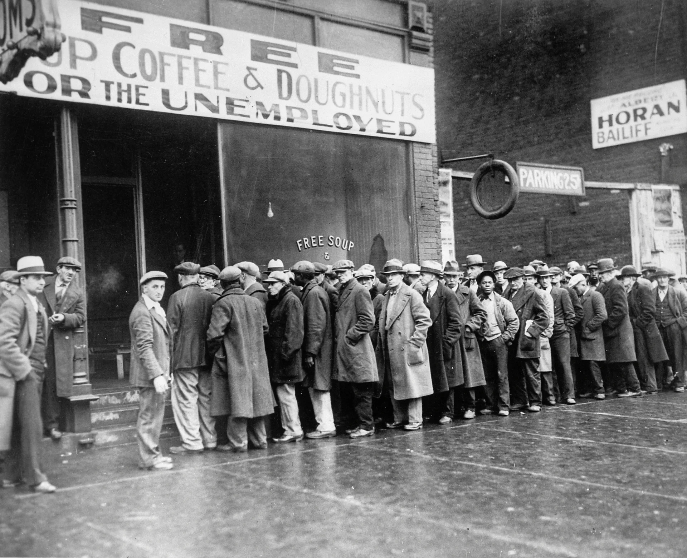
चित्र 8 (Topic AI HD Artwork): 1929 की वाल स्ट्रीट मंदी (Wall Street Crash) और विश्वव्यापी आर्थिक महामंदी - बेघर किसान, बंद पड़े बैंक और बेरोजगारों की लंबी लाइनें।
🔍 चित्र का विस्तृत विवरण & ऐतिहासिक संदर्भ:
• क्या दर्शाता है: महामंदी का वैश्विक प्रभाव - भारत में किसानों के अनाज और कपास की कीमतों में 50% की भयंकर गिरावट।
• ऐतिहासिक महत्व: भारत मंदी का निर्यातक बन गया और सोने का निर्यात करके देश ने मंदी का सामना किया।
🚨 1929 की महामंदी के 2 मुख्य कारण (Causes of Great Depression):
1. कृषि में अति-उत्पादन (Agricultural Overproduction): युद्ध के बाद कृषि उत्पादों का उत्पादन अधिक हो गया जिससे कीमतें बुरी तरह गिर गईं। किसानों ने अपनी आय बनाए रखने के लिए और अधिक उत्पादन किया, जिससे बाजार में खाद्यान्न सड़ने लगा और कीमतें तथा किसानों की आय और गिर गई।
2. अमेरिकी कर्जों की वापसी व वाल स्ट्रीट क्रैश (October 1929): 1928 में अमेरिका ने विदेशों को कर्ज देना बंद कर दिया। अक्टूबर 1929 में वाल स्ट्रीट शेयर बाजार धराशायी हो गया। अमेरिका के हजारों बैंक दिवालिया हो गए और लाखों घर नीलाम हो गए।
- महामंदी ने भारतीय व्यापार को तुरंत प्रभावित किया। 1928 से 1934 के बीच भारत का आयात-निर्यात **आधा (50%)** रह गया।
- किसानों पर मार: अंतरराष्ट्रीय कीमतें गिरने से गेहूं की कीमत 50% गिर गई। बंगाल के जूट (पटसन) उगाने वाले किसान तबाह हो गए क्योंकि बोरों का निर्यात ठप हो गया था।
- सोने का निर्यात: संकट के समय भारत के ग्रामीण किसानों ने अपने सोने-चांदी के गहने बेचे। 1931-1934 के बीच भारत से बड़े पैमाने पर **सोने का निर्यात (Export of Gold)** हुआ, जिसने ब्रिटेन को मंदी से उबारने में मदद की।
द्वितीय विश्व युद्ध (1939-1945) के बाद दुनिया के सामने दो मुख्य चुनौतियां थीं: आर्थिक स्थिरता बहाल करना और पूर्ण रोजगार बनाए रखना।
चित्र 3.11 (आधिकारिक NCERT इतिहास पाठ्यपुस्तक अध्याय 4): जुलाई 1944 में न्यू हैम्पशायर (अमेरिका) का माउंट वाशिंगटन होटल जहाँ ऐतिहासिक 'ब्रिटेन वुड्स सम्मेलन' (Bretton Woods Conference) आयोजित हुआ था।
🔍 चित्र का विस्तृत विवरण & ऐतिहासिक संदर्भ:
• क्या दर्शाता है: जुलाई 1944 का न्यू हैम्पशायर (अमेरिका) का माउंट वाशिंगटन होटल जहाँ ऐतिहासिक **ब्रिटेन वुड्स सम्मेलन (Bretton Woods Conference)** हुआ।
• ऐतिहासिक महत्व: युद्धोत्तर विश्व अर्थव्यवस्था को संभालने के लिए अंतरराष्ट्रीय मुद्रा कोष (IMF) और विश्व बैंक (World Bank) का गठन हुआ।
चित्र 9 (Topic AI HD Artwork): ब्रिटेन वुड्स की जुड़वा संतानें - 1944 में गठित अंतरराष्ट्रीय मुद्रा कोष (IMF) एवं विश्व बैंक (World Bank) का वैश्विक वित्तीय ढांचा।
🔍 चित्र का विस्तृत विवरण & ऐतिहासिक संदर्भ:
• क्या दर्शाता है: ब्रिटेन वुड्स की जुड़वा संतानें - IMF और विश्व बैंक की स्थापना व स्थिर विनिमय दर (Fixed Exchange Rates) प्रणाली।
• ऐतिहासिक महत्व: इसने 1947 से 1970 तक पश्चिमी औद्योगिक देशों में आर्थिक वृद्धि दर को अभूतपूर्व ऊंचाइयों पर पहुँचाया।
🏦 ब्रिटेन वुड्स संस्थान (Bretton Woods Institutions):
• सम्मेलन (जुलाई 1944): अमेरिका के न्यू हैम्पशायर स्थित ब्रिटेन वुड्स में संयुक्त राष्ट्र मौद्रिक एवं वित्तीय सम्मेलन हुआ।
• दो मुख्य संस्थाएं (Bretton Woods Twins):
1. अंतरराष्ट्रीय मुद्रा कोष (IMF): सदस्य देशों के बाहरी लाभ और घाटे से निपटने के लिए वित्तीय सहायता देना।
2. विश्व बैंक (World Bank / IBRD): युद्धोत्तर पुनर्निर्माण के लिए पूंजी का इंतजाम करना।
• स्थिर विनिमय दर (Fixed Exchange Rate): राष्ट्रीय मुद्राओं को अमेरिकी डॉलर ($) से जोड़ा गया, और 1 डॉलर की कीमत 35 औंस सोने के बराबर तय की गई।
- द्वितीय विश्व युद्ध के बाद एशिया और अफ्रीका के अधिकांश देश आजाद हुए। लेकिन IMF और विश्व बैंक पर पश्चिमी औपनिवेशिक शक्तियों का नियंत्रण था।
- जी-77 (Group of 77): विकासशील देशों को IMF व विश्व बैंक से उचित लाभ नहीं मिला। अतः 77 विकासशील देशों ने संगठित होकर 'G-77' समूह बनाया।
- नई अंतरराष्ट्रीय आर्थिक प्रणाली (NIEO - New International Economic Order): G-77 देशों ने मांग की कि उन्हें अपने प्राकृतिक संसाधनों पर पूर्ण नियंत्रण मिले, विकास सहायता मिले और कच्चे माल का उचित मूल्य मिले।
चित्र 10 (Topic AI HD Artwork): आधुनिक वैश्वीकरण एवं बहुराष्ट्रीय कंपनियां (MNCs) - कम मजदूरी और विशाल बाजार के कारण चीन व एशियाई देशों में उद्योगों का स्थानांतरण।
🔍 चित्र का विस्तृत विवरण & ऐतिहासिक संदर्भ:
• क्या दर्शाता है: 1970 के दशक से बहुराष्ट्रीय कंपनियों (MNCs) द्वारा अपने उत्पादन केंद्र चीन, भारत और एशियाई देशों में स्थानांतरित करना।
• ऐतिहासिक महत्व: कम मजदूरी और विशाल बाजारों की खोज ने आधुनिक वैश्वीकरण (Globalization) को जन्म दिया।
🌐 बहुराष्ट्रीय कंपनियों (MNCs) का विकास एवं चीन का उदय:
• 1970 के दशक में स्थिर विनिमय दर की प्रणाली ध्वस्त हो गई और परिवर्तनशील विनिमय दर (Floating Exchange Rates) लागू हुई।
• चीन और एशिया में स्थानांतरण: 1970 के दशक से बहुराष्ट्रीय कंपनियों (MNCs) ने अपने उत्पादन केंद्र चीन, भारत और दक्षिण-पूर्व एशिया के देशों में स्थानांतरित करने शुरू किए, क्योंकि इन देशों में कम मजदूरी (Low Wages) के कारण उत्पादन लागत काफी सस्ती थी। इससे आधुनिक भूमंडलीकृत दुनिया का उदय हुआ।
📌 अध्याय 3 का संपूर्ण सार एवं मुख्य बिंदु (10 महत्वपूर्ण निष्कर्ष):
1. प्राचीन वैश्वीकरण और रेशम मार्ग (Silk Routes): प्राचीन काल से व्यापारी, तीर्थयात्री और यात्री ज्ञान व व्यापार के लिए यात्राएं करते थे। 'रेशम मार्ग' एशिया को यूरोप व उत्तरी अफ्रीका से जोड़ते थे, जिनसे रेशम, मसाले और धर्मों का प्रसार हुआ।
2. भोजन की यात्रा (स्पैगेटी और आलू): चीन से नूडल्स पश्चिम जाकर 'स्पैगेटी' बने। 1492 में कोलंबस द्वारा अमरीका की खोज से आलू, मक्का, टमाटर, मिर्च यूरोप आए। 1845 के आयरलैंड के आलू अकाल (Irish Potato Famine) में 10 लाख लोग मारे गए।
3. विजय और चेचक की बीमारी (16वीं सदी): स्पैनिश विजेताओं की सबसे बड़ी ताकत बंदूके नहीं, बल्कि 'चेचक' (Smallpox) के कीटाणु थे। अमरीकी मूल निवासियों में इम्युनिटी न होने से पूरे समुदाय खत्म हो गए।
4. 19वीं शताब्दी के 3 आर्थिक प्रवाह (1815-1914): 1. व्यापार का प्रवाह (अनाज/कच्चा माल), 2. श्रम का प्रवाह (मजदूरों का प्रवासन), और 3. पूंजी का प्रवाह (निवेश)।
5. ब्रिटेन में 'कॉर्न लॉ' (Corn Laws) का रद्द होना: मक्के के आयात पर पाबंदी हटने से सस्ता अनाज आने लगा, जिससे ब्रिटिश खेती ठप हुई। लाखों किसान अमेरिका व ऑस्ट्रेलिया चले गए, जिससे वैश्विक कृषि अर्थव्यवस्था बनी।
6. प्रौद्योगिकी और मांस व्यापार: प्रशीतित पोतों (Refrigerated Ships) के आविष्कार से अमेरिका व ऑस्ट्रेलिया से जमे हुए मांस (Frozen Meat) का यूरोप में प्रचुर आयात हुआ, जिससे यूरोप में मांस सस्ता हुआ।
7. रिंडरपेस्ट (Rinderpest) मवेशी प्लेग (1890s): अफ्रीका में 1890 के दशक में मवेशियों की बीमारी 'रिंडरपेस्ट' ने 90% पशुओं को मार डाला, जिससे अफ्रीकियों की आजीविका नष्ट हुई और यूरोपीय शक्तियों का कब्जा हुआ।
8. अनुबंध श्रम (Indentured Labour): 19वीं सदी में भारत (यूपी, बिहार) और चीन से लाखों मजदूरों को कैरेबियाई द्वीपों (त्रिनिदाद, गुयाना), मॉरीशस भेजा गया। इसे 'नई दास प्रथा' कहा गया। उन्होंने 'होसे' और 'चटनी संगीत' जैसी संस्कृति बनाई।
9. महामंदी (The Great Depression 1929): कृषि अति-उत्पादन और अमेरिकी बैंकों के संकट से 1929 की महामंदी आई। बैंक डूबे, बेरोजगारी फैली और भारत में कृषि कीमतों में 50% की गिरावट आई।
10. ब्रिटेन वुड्स संस्थान (1944) व आधुनिक वैश्वीकरण: 1944 के ब्रिटेन वुड्स सम्मेलन में IMF और विश्व बैंक (World Bank) का गठन हुआ। 1970 के दशक में चीन और एशिया में उद्योगों के स्थानांतरण से आधुनिक वैश्वीकरण का उदय हुआ।